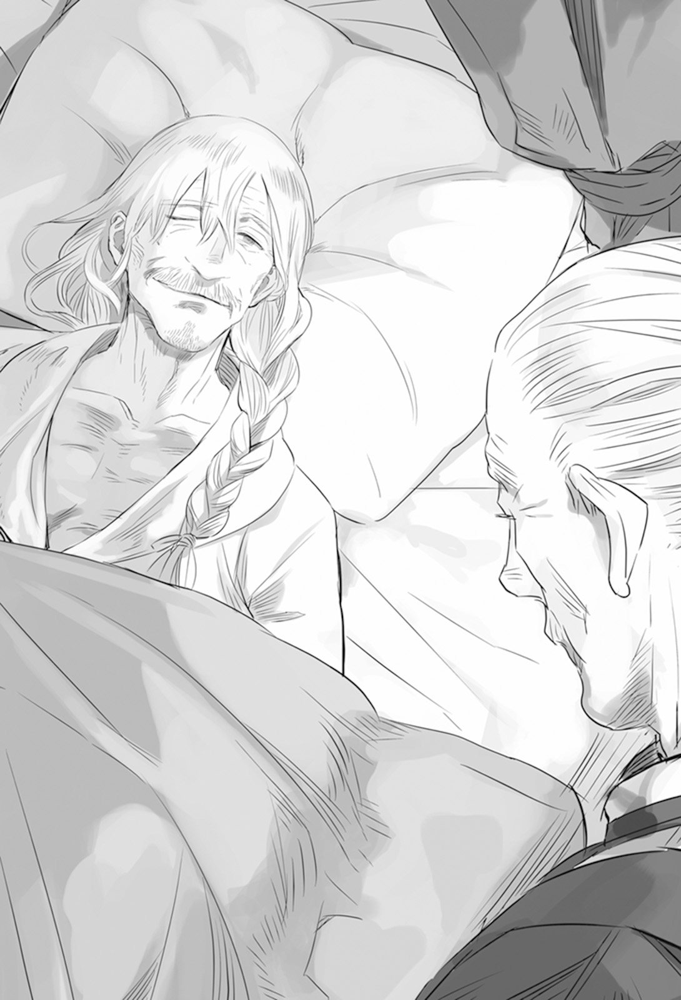
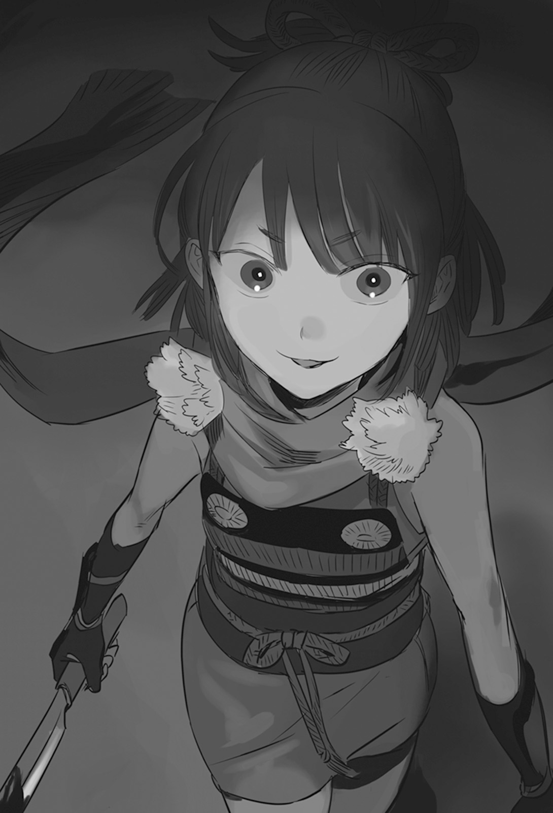

Chapter 3 – Marching Toward the Future
.
Part 1
The shadow of a man encroached into the space from inside the deep darkness like a spilled ink.
The legendary man who was said that there was no place that he couldn’t enter, Caulila respectfully bowed toward his master who was lying down on his bed.
「I have returned.」
「You look like something good has happened huh, Caulila.」
Valerie opened one eye toward Caulila while continuing to lie down on his bed.
Caulila frowned with a troubled look seeing that eye laughing like a boy.
「It’s not something to laugh about. Good grief, that side of yours haven’t changed every since you were young.」
「No no, I too have grown old. I can’t even say a single considerate word at this kind of time.」
Even though he was going to reach the finale of such enjoyable life, he was acting just like a ham actor.
At the very least he would do his best to be able to move freely before the curtain call toward the audiences.
Even though he looked like this he had the self-confidence that he could become a famous villain.
「It seems that Mauritz-sama has died.」
「Hou……」
Valerie groaned in admiration. He put on a speechless smile that seemed amused and happy.

「You look happy my lord. Even though the scheme that you had put much work into has been seen through.」
「Was it Augusto?」
「Surely only your son can possibly saw through this kind of completely malicious and twisted plot.」
「The way I raised him was great.」
Caulila felt exhausted and let out a long sigh.
He couldn’t help but pity Augusto who had this kind of egoistic and nasty father.
「Is it okay for you to make that kind of happy face? You had put a lot of effort into this strategy correct?」
「Certainly I wished that the nobles within the dukedom could crush each other for a bit more. However with this Baldr will be unable to accept the noble’s surrender so easily so it’s a matter of great congratulation.」
Valerie was convinced that with Mauritz’s caliber he wouldn’t be able to take the life of a hero like Baldr anyway.
However Mauritz would be able to inflict a great damage from the inside to the kingdom’s army that possessed the advantage right now.
The objective of this plot was to plant the seed for such deep distrust between Baldr and the dukedom nobles.
Normally thinking it was impossible to imagine that someone would go as far as using his own father as sacrifice and even abandoned his own territory and fortune just to assassinate Baldr.
This plot was only possibly because Marquis Fiorentina and Mauritz had absolute loyalty for the archduke, but the kingdom’s side couldn’t possibly imagine such thing.
At the same time as the side effect of Marquis Fiorentina’s betrayal, the dukedom nobles were pushed into paranoia that there was already no noble in the dukedom who could be trusted.
But Marquis Fiorentina agreed with this plan even knowing that such thing would happen. That was because he thought that the only way for the dukedom to overturn this situation didn’t exist other than assassinating Baldr.
Of course it wasn’t a lie that the dukedom would overturn the situation in one go if Baldr could be killed.
However both Marquis Fiorentina and Mauritz weren’t truly aware just how might King’s Gate power was.
Therefore Valerie couldn’t be said as tricking them. He only hold back from telling them a little fact.
「I don’t have anything to worry anymore if that child can already surpass my expectation.」
The hero Baldr had thin awareness toward human malice because he was a hero. That was Valerie’s only worry.
From the ancient time, it was the small person who wasn’t worth any consideration who made the hero stumbled.
What was truly troublesome was that a small person could hide their malice completely and obediently licked someone else’s shoes if it was for their own benefit.
The concept of shame didn’t exist for them.
To control such malice, one could only use terror that would make the small person unable to even think of opposing or an even greater malice.
For better or worse, he had raised Augusto to possess the eye to see through such malice.
Most likely if it was Augusto, he would control them not with malice like Valerie, but with money and information.
Either way the irreplaceable treasure that Valerie should protect now had left from his hand to walk his own path.
「……I want to drink alcohol.」
「I’m amazed you can say that even though you don’t even have the strength to stand up.」
Even though Valerie didn’t even have the stamina to stand up when night came like this, when morning came he would carry out the duty as prime minister while looking hale and hearty.
Caulila completely believed that his lord was a monster.
He also learned just how deep and tough a human’s mental strength could be.
「I shall bring a hot wine here for your enjoyment.」
「For wine I like it better when it’s red wine that is chilled to moderate temperature though……」
「Please don’t ask for such extravagance when you can’t even drink it yourself!」
The two old men enjoyed themselves even while continuing such foolish talk.
Before the last curtain that decorated their life was raised, it was nice to have a night like this where they acted like children with their old friend.
It was truly a luxury to be able to enjoy the slightly remaining time that they had among themselves.
No matter how much of a crafty and vicious schemer Valerie was, that was nothing more than a single aspect of him as a human.
Exactly because he was a schemer who had massacred countless amount of people that he paradoxically knew better than anyone how precious, sad, fun, and lovely human life was.
The night of the old men were growing late together with quiet laughters.
.
Part 2
「──Gentlemen!」
Baldr stood on the rampart of Mulberry and raised his voice toward the army of the kingdom that was gathered there.
At the left wing was the beastman cavalry under the command of Gitze. At the right wing was the kingdom’s mobile battalion under the command of Brooks, and then at the center was the reorganized kingdom’s regular army under the command of Ramillies and Marquis Randolph’s army lined up orderly.
Their number was around 20000.
There was also the new addition of 2000 beastman soldiers from Gartlake Kingdom. Satsuki took command of these troops.
Although Satsuki had arrived ahead to join Baldr, as an organization the dog-eared tribe of Nordland Kingdom had gotten a head start ahead of them. That fact made them gritted their teeth and the height of their morale pierced the heaven.
「We shall obtain achievements for the pride of cat-eared tribe nya!」
「Ou! Right now is the time we show the world the strength of our cat-eared tribe! We won’t lose against those dog ears and place our shrine maiden princess as the beast king’s wife!」
The leader of the dispatched troops Hayami thrust up his right hand strongly. His words flustered Satsuki and she turned bright red.
Selina had already obtained a position as an official fiancée. So for them having Satsuki obtaining the same position as fiancée was their greatest task.
Their feeling toward beast king wasn’t at all inferior compared to the dog-eared tribe.
「U-unya nya? T-that’s a misunderstanding nya. Baldr and me aren’t like that nya. B-but, if Baldr wish for it……」
Satsuki’s words tapered at the end and she shook her hips in agony.
「Shrine maiden princess-sama is lovestruck??」
「I-is it alright for us to feel hopeful like this? That rascal shrine maiden princess-sama has turned into an adult……」
「I’m not lovestruck nyaaaaaaaaaaaaaaaaaaaaa!」
The shame that she couldn’t endure explode and the merciless attack of King’s Gate owner blew away the unfortunate men who was near Satsuki at that time.
Baldr wanted to hold his head when he saw from afar the mysterious explosion that occurred where Gartlake’s force was lined up, but he did his best to ignore it.
「Our long time of submission has ended!」
It didn’t just refer to how Mulberry was switching into defense.
Since the kingdom’s destruction, the commoners of Trystovy was forced to submit in servility toward the dukedom’s nobles.
And the beastmen, they were suffering because of deeply rooted discrimination and obtained their current position only after risking their lives at the remote region like Nordland and Gartlake to raise achievements in the battlefield.
Ramillies had continued to fight until now with broken heart and remorse since his lord was killed.
Baldr himself was originally only living an idyllic life as the heir of Cornelius, but then unreasonable events fell down on him one after another and now he ended up as the heir of Trystovy Kingdom. He had a complicated feeling toward such chain of events.
However all of them said farewell toward their past and grasped a new future. It was possible for them to grasp it.
Baldr’s words were spoken with that many emotions in them.
「After this we are going to regain the kingdom, our future, and our hope. No, we are going to create a new world behind us.」
The Trystovy Kingdom that Baldr would create would never be the same like the kingdom of the past.
In the end how many people were seriously aware of that.
Even his allied countries Sanjuan Kingdom, Majorca Kingdom, Nordland Kingdom, and Gartlake Kingdom didn’t completely understand the impact that would result from what Baldr was trying to do.
In a sense the one with the closest understanding of that might be Europa Church.
The kingdom that Baldr was trying to create was a nation that equally treated everyone with law whether they were beastman, human, noble, or commoner.
And then he was going to force a new global standard to the continent not with the traditional aggressive war, but using information and economic strength.
There was no way that Baldr would simply take over a country and that would be the end of it.
For Baldr, becoming a king was just a mean and wasn’t his final objective.
The new rule, new order that Baldr was aiming at could possibly become a threat to the countries that were allied to him too.
Even so he wouldn’t give up his wish to seek that.
「What all of you here is seeking is also what I’m seeking. It’s by no mean a fictitious dream that is beyond our reach!」
The side that was in offense and the side in defense in this war had been reversed.
The dukedom already had no battle strength or guts to abandon their defense and attacked.
It was effectively impossible for a country that was searching for traitors among their midst with bloodshot eyes to go into an expedition with a large army.
Baldr would only need to pour water into that crack of the dukedom, split them even further, and dried up their force starting from the end.
「──If this world is unreasonable then we will crush that unreasonableness. We have already endured enough until now. Isn’t that right? Gentlemen!」
「True! True!」
「We already have enough going along with those nobles whose brains are only filled with flower field!」
「Oo……is our long, long wretched fight finally going to be rewarded……」
As expected the reaction of the beastman race who had been oppressed for a long time was standing out.
But the people of Mulberry who had persisted with their autonomy until now also harbored resentment toward the dukedom that had been accumulating until now. Their emotion wasn’t inferior at all even when compared with the beastmen.
The majority of them had lost family members in the civil war. After all their business at the capital Millianna got confiscated by the dukedom.
「The era where we can only endure the unreasonableness is over! Even if the unreasonableness cannot be erased from the world, I’ll still fight the unreasonableness. And then if all of you gentlemen will fight the unreasonableness together with me, then I’ll definitely become your strength! I ask you gentlemen. Will you continue to endure? Or will you fight?」
「Fight!」
「Fight!」
「Until this life run out! We will become the beast king’s strength!」
Everyone was fighting some kind of unreasonableness.
However it was impossible to erase everything unreasonable from this world.
That was why one day human would give up fighting the unreasonable and protect themselves by enduring it.
But Baldr said that he wouldn’t give up even then.
The people who knew about the mischief of fate that didn’t allow Baldr to be a young boy when he was still at such age shed their tears.
They thought that even if it was impossible for them, wouldn’t it be possible to brush aside the unreasonableness if they followed Baldr.
The caliber that could take in the hope of the people like that was the proof of Baldr’s qualification as a hero.
「Beastman cavalry unit, go north along the western coast and drive a wedge into the enemy’s defense! If the enemy hole up in their castle then there is no need to go along with them with a siege. Focus on hit and run!」
「Yes our king-! This Gitze Mannerheim shall carry out your royal command!」
「Brooks! I order the kingdom’s mobile battalion to scout and route the enemy scouts at the center!」
「Your will be done!」
「Cat-eared tribe, go together with General Ramillies and suppress the eastern coast!」
「Leave it to us nya!」
「Marquis Randolph’s army will accompany me with the royal guard to advance through the center. We will also carry out the construction of supply line and pacification of the populace at the same time as we march. I expect meticulous attention from everyone.」
「We shall answer your highness’s expectation without fail.」
Silk who was commanding Marquis Randolph’s army said that and bowed her head.
She had been liberated from the sense of duty that was similar to a curse that her mother gave her since she was a child. Right now she was burning with the ideal of building a new country together with Baldr.
Silk already had a noble and dignified bearing from the start, but the dark shadow from the curse of her mother had vanished and now she was a flower that had blossomed in full glory like a white anemone.
Baldr was almost entranced by her dignified appearance, however he suppressed that feeling with his rational mind.
「──Depart!」
.
Part 3
The number of land army that Trystovy Dukedom was still commanding even now was more than 40000.
However their morale had completely reached rock bottom.
The majority of the soldiers were commoner. The scar of the dukedom’s massacre of the commoners was still leaving a deep wound in them.
On top of that even Marquis Fiorentina had turned traitor. Right now they couldn’t possibly neglect the protection of the capital when anyone could turn traitor anytime.
If anything Archduke Jack’s fear toward betrayal had worsened even more that he was forbidding Olten from marching out.
「Who are going to protect me if you are gone?」
Jack was already unable to trust any noble whose territory was at the surrounding of Millianna.
He was just barely trusting Olten and Valerie. Or rather the country’s management would crumble if he didn’t trust at least these two, but thanks to that Olten had completely lost his strategic flexibility.
「──Did he split his force knowing that this will happen? That man is really nasty. I also don’t think this move is because of Ramillies’s suggestion. This must be that man’s decision.」
「And yet ignoring him until he come to Millianna is just a foolish plan you know? Our allies’ morale won’t hold if we don’t at least exhaust them to some degree.」
Even without that the commoners were gradually turning their back on the dukedom. All the nobles would surely turn into their enemy too seeing that the dukedom army was only watching without leaving the capital even though the enemy was fewer in number.
Olten and his confidant Silva was at their wits’ end.
The dukedom had continued to be defeated since Baldr appeared.
It was fine even if it was just a small victory, they wanted to announce a victory for the dukedom.
That was why Olten planned to lead a small unit that consisted only of elite force to launch hit and run at the weakest unit of the kingdom army, bringing victory to the dukedom, but that plan had gone wrong right from its foundation.
「Other than the enemy’s main force, all their other detached units consisted of a group with high mobility. We won’t be able to capture them at all by just gathering number. Rather if we are careless we will be the one who suffer damage.」
The beastman corps was few in number, but they wouldn’t go along with a protracted battle. They would rampage as much as possible before retreating immediately. If one was unable to endure that hit and run and marched out of their defensive position to pursue, they would immediately get assaulted. Several nobles had gotten the table turned on them that way.
However the objective of the enemy wasn’t to occupy territory. Though it was difficult whether it should be considered as lucky for the dukedom or as unlucky because that meant the enemy wouldn’t just stay in one place.
「And yet clashing with the enemy main force under the command of the crown prince is also impossible. We are still waiting for the reply of the church about the method to oppose that foul play called King’s Gate.」
「As expected, if we are going to attack it will have to be against either of the beastman forces at both wings huh……」
Silva muttered that with a difficult expression and he folded his arms.
He was really reluctant to face off against that Nordland’s cavalry unit which crushed even that General Mikhail.
Generally the beastmen also had good night vision so it was virtually impossible to launch a night surprise attack at them.
If he didn’t catch up to the enemy during the day and attack, they would just escape him. And yet it was unreasonable to ask him to do that because the enemy was completely made up of cavalry, so their mobility was higher.
「In that case we will have to pick the newcomer, the beastmen of Gartlake.」
The information about them was still few but it was pointless to ask for something that they didn’t have.
Nordland’s dog-eared tribe had the track record of displaying extraordinary mobility and striking power. The compatibility of the current dukedom army against them was too poor.
The cat-eared tribe that consisted of infantries seemed like the easier opponent to deal with.
「──There is no need to force yourself. Don’t lose patience and try to win in a hurry.」
「Leave it to me.」
Olten was forced to dispatch Silva to be the commander of the troops. It spoke clearly of how pressed the dukedom was for personnel.
It was because the previous great general Cesare had removed almost all of the capable generals who could possibly become his rival.
Also, Olten fundamentally wasn’t someone who was discriminating between noble and commoner, but he wouldn’t be able to take responsibility if he dispatched a general from commoner background at this situation and something untoward happened.
Silva was essentially a staff officer, but exactly because of that he perfectly understood the political and psychological aspects of this batle.
The number of troops prepared to be dispatched was 8000.
It was a force that was composed of soldiers from the area surrounding the capital who could be relatively trusted.
「Do all of you understand? Our opponent is the beastmen! We won’t hand over our homeland to those animals!」
「OOOOOOOOOOOOOOOOH!」
Even the commoners had felt how disadvantaged the dukedom was right now, but the people at the surrounding area of the capital still had superstitious fear toward beastman smoldering in their heart.
Because of that they were able to barely maintain their fighting spirit to fight the kingdom in order to protect their homeland, their family, and their lover.
But even that fighting spirit was weakening day by day as the rumor that Baldr was kind and fair toward the commoners was spreading further.
That was why it was necessary to crush the kingdom before their fighting spirit turned into hostility toward the dukedom.
Time was at the kingdom’s side and against the dukedom.
The army of 8000 that Sylva was commanding started marching toward the territory of Count Moretti at the eastern coast.
At present, it was deemed that the kingdom army was heading there next after breaking through the territory of Baron Dreher.
Besides if they went to the territory of Count Moretti whose financial situation was prosperous and standing military force was big, they would be able to expect some help with supplies and fighting strength from there. On paper Count Moretti should be able to hole up in his castle and endured until Sylva’s force arrived. Perhaps the enemy was staying still at there right now.
Either way if Moretti got broken through, there would be no more defensive location that was located near to the capital.
「This isn’t a difficult task at all. In short we just need to repel the attacking opponent even if in the worst case we have to sacrifice a lot of soldiers for it.」
Sylva muttered with a low voice so that nobody else could hear it.
.
Part 4
「This is lacking nya!」
Satsuki was in a bad mood even though her force had taken down three castles in a short time.
「Oi, shrine maiden princess-sama is in a bad temper.」
「Someone go pacify her!」
「I-if princess can be satisfied by punching me then……please do so as much as you……hafuuu」
「Back off you bastard!」
「Ofuuuuuh!」
「All of you are noisy nyahh!」
「Buberah!」
There was just one reason why Satsuki was irritated.
Even though she was in high spirit for obtaining achievements for Baldr’s sake, her force had come until this far without facing any resistance that could even slow them down.
The 2400 strong troops that consisted of the cat-eared tribe and Antrim soldiers under Ramillies’s direct command were too many for the nobles with small territory to oppose alone.
Unless one was a high ranked noble with at least the rank of count, it was difficult for them to even possess equal military strength with the enemy. It couldn’t be helped that all of them turned tail and ran away.
「Well, as expected the next opponent surely won’t run away right from the beginning.」
With an exasperated look Ramillies intervened with Satsuki and her men who seemed like they would still continue with their exhausting quarrel.
Moretti territory was a strategic position at the central part of Trystovy. There was also a core city there where highways coverged.
It also had a large castle that was proportional with the city’s scale. There was no way the enemy would think to run away immediately.
「Then that’s good nya!」
Satsuki’s good mood was restored and she ordered the troops to advance happily.
「Don’t make the troops exhausted before the fight okay?」
Not even four and half a hour had passed since the troops were ordered to take a short break. Marching during war was unexpectedly an activity that consumed stamina.
It was the basic for a commander to make their troops rested before the battle.
「General Ramillies, you don’t get it nya.」
Stasuki turned around with a cheerful smile. A chilling sharpness could be felt from that smile.
「For the cat-eared tribe, marching this far is no different than a stroll nya.」
.
「The reinforcement from the capital still hasn’t arrived-?」
「There is a message that an army of 8000 under the command of General Sylva has already departed. Most likely they will arrive within the next two days.」
「Those disgusting animals are almost here already!」
Count Moretti, Bahns was yelling while looking that he was clearly at his wits’ end.
Some of the nobles of the surrounding area were already abandoning their territory and ran away to Moretti territory.
From them he learned that it seemed that the enemy’s main force was beastmen, and their number was around 2000.
However he couldn’t forget. The fact that General Mikhail who boasted of being invincible was taken down by a beastman force that numbered less than 3000.
He couldn’t underestimate the enemy as just being 2000 troops no matter.
He even wondered whether even a reinforcement of 8000 troops could win. At night such thought filled his mind and he couldn’t sleep. After all General Mikhail had a large army of 20000 from Answerer Kingdom and still lost.
「Should I also contact the kingdom quickly……however I heart that even Mauritz-dono was executed.」
This could be said as the symbol of how malicious Valerie was.
He would be fine even if Mauritz was acting as a snake in Baldr’s bosom and dealt a painful blow to him later. But he was also fine even when Mauritz was discovered. With that the dukedom nobles also became unable to surrender casually because they heard of how Mauritz got executed after surrendering.
The nobles didn’t know anything about the scheme that Valerie and Marquis Fiorentina were creating behind the scene.
It couldn’t be helped because at the surface it only looked like Baldr was merciless against a great noble who surrendered to him and had him executed.
Valerie didn’t mind what kind of result that scheme produce for the sake of his objective to make the dukedom nobles and Baldr crushing each other to the utmost.
It was truly the demonstration of his worthiness for the title of demon king.
「Somehow, I have to hold out somehow! Besides I didn’t participate with the destruction of the kingdom at all, and yet why do I have to experience something like this!」
Even if he didn’t proactively cooperate, after that he immediately went to wag his tail to the dukedom. Bahns was feeling indignation while conveniently forgetting that fact.
The soldiers of Moretti House numbered almost the same with the enemy,
He had enough force if it was considered from the rule that the attacker needed three times the number of the defender, At the very least he could hole himself inside his castle to buy time.
But he had a bad premonition.
Unfortunately for Bahns, his bad premonition was accurate this time.
.
──Late at night.
Ramillies watched the sight of an army of 2000 advancing stealthily like a black wave without making any sound. He felt cold sweat trickling on his back.
「What kind of inhuman places Nordland and Gartlake are? No, they are literally inhuman in a sense though.」
Ramillies also doubted his ears when he heard from Baldr how the dog-eared tribe ran along their horse in their forced march, but the sight before him wasn’t at all inferior compared to that.
Even if every single one of them was only making a small sound, if a thousand people were gathered then even a small sigh would become a loud sound that reached the ear.
And when it was the full charge of an army, even if the army was made up of infantries they wouldn’t be able to avoid causing tremor on the ground from their running.
And yet what about this?
The elites of the cat-eared tribe were running with speed that far surpassed the average human while making sound that was even smaller than the leap of a small insect.
It was impossible to detect this stealth at this late at night without using magic.
Ramillies felt glad from the bottom of his heart that beastman race couldn’t use magic.
As expected even Ramillies couldn’t find a countermeasure to win against them without magic.
Unlike the cat-eared tribe who had good night vision, the sentries were only relying on the light of the watch fires. The limit of their sight in that situation was around 50 meters at best.
For a trained army, a distance of 50 meters was no different than a point-blank range.
For the cat-eared tribe who possessed excellent acceleration speed, it was a distance that could be covered in a single breath.
「Hm?」
A sentry felt something was out of place the way the pitch black forest looked as though it was undulating and he tilted his head.
Was there a forest at that spot?
Before his head with its lowered thinking ability due to staying awake this late at night could form a conclusion, the black lump that he thought as forest burst out.
When he thought that he was seeing something like baby spiders scattering in the air, more than a thousand beastmen were already leaping through the air simultaneously.
「E-enemy attack!!!」
The yell of the sentry was fatally late.
Like how cat climbed a wall, the cat-eared tribe lithely climbed the rampart with agile body movement.
Even if the castle had 2000 soldiers, at night only around a fourth of them, 500 soldiers were still active.
In addition, even the ability of the soldiers who were still awake was lowered at this late night. It was impossible for them to fight the fully awake 2000 cat-eared tribe.
Count Moretti’s army was mostly unable to do anything. Among the cat-eared tribe who leaped in the middle of those soldiers, there was a silhouette that was more conspicuous than the rest.
「Finally a fight nyaaaaaaaaaaa!」
「GYAAAAAAAAAAAH!」
Satsuki with her King’s Gate activated had let go of her restraint.
It was as though a gust that was like the cold wintry wind of autumn blew. Then after that the heads of many people fell off silently.
It was something that happened inside the darkness where the field of vision was bad.
The morale of Count Moretti army instantly crumbled seeing that nightmarish scene.
「Monster! These guys are a gathering of monsters!」
「Rude nya!」
「Guhah!」
It wasn’t even a battle anymore. It was a one-sided massacre.
The 500 soldiers on duty were taken down without being able to offer any organizational resistance. Even the sleeping soldiers who woke up and came running unprepared were killed without being able to comprehend the situation.
「……Fool.」
Ramillies who was watching the battlefield from some distance away let out a sigh for his enemy Count Moretty army.
The result was already clear from everyone’s perspective. Resisting any further than this would only increase the number of victim.
Even so the soldiers still continued to fight. That was because the commander was unable to grasp how despairing the battle situation was or else the commander was unable to accept reality.
「Even so, that’s really a foul play.」
Naturally Satsuki’s King’s Gate was a foul, but the cat-eared tribe’s ability to climb the rampart vertically and their stealth ability to not make the slightest sound at all were also foul play.
Against something like that, the defense of a defensive facility was almost meaningless.
While the dog-eared tribe was specialized in group battle at the open field, the cat-eared tribe was specialized in forest or urban comabt using their stealth and physical ability.
It would be difficult for human to even cope against either.
「First we must never fight in the arena where they have the advantage. After that if we use magic that is their weak point……」
The point was that there was a way to fight if they didn’t try to match their enemy.
It was the bad habit of a tactician to picture a countermeasure even against their supposed ally, just like what Ramillies did here.
「Is it alright for us to just watch?」
「We won’t make it in time even if we go there now. It’ll end soon.」
Antrim army got left behind by the cat-eared tribe’s forward charge, but Ramillies sharply sensed that the end of the battle was nearing.
「My lord! Hurry! We can’t hold out any longer than this.」
「Just what in the world is going on? How can the enemy infiltrate this far? Can’t you all hold them back until I finish loading up my assets?」
Bahns who was roused out from his peaceful sleep was still unable to understand how grave the situation was even now.
「The beastmen jumped over the rampart instantly and invaded into the castle! Half of our troops are already eliminated! There isn’t even a second to waste!」
「W-what did you say?」
He couldn’t believe that half of his 2000 troops were already annihilated.
Not even thirty minutes had passed since the noisiness of battle was resounding in this castle.
Unlike open field battle where armies clashed head on against each other, so much damages could only come out in a siege just before the castle fell.
No, could it be……this castle was really in the verge of falling?
Just as Bahns reached that thought and his complexion turned pale.
「I found the head honcho nya.」

「Uoh?」
The source of that voice undoubtedly wasn’t here until just now.
In the first place they were at the deepest place of the castle, the room of the feudal lord. The route that led to this place shouldn’t have been broken through by the beastmen yet.
「You bastard, where did you come from?」
The knight in charge of the guards pulled out his sword furiously.
「I only went straight nya. The only one who can stop me──is just Baldr nya.」
Strictly speaking Maggot and Gina should also be mentioned there, but Satsuki’s maiden heart intentionally ignored that.
「What are you doing! The opponent is just one person!」
「Unya? You are also alone though?」
「What?」
Bahns yelled angrily at the head guard beside him.
「Kill that woman quickly! Don’t just stand there!」
*DON* Bahns’s fist hit the table loudly. With that as the signal, the head guard and his subordinate knights slowly fell.
Red liquids slowly spread out on the floor from the bodies of the fallen knights.
They had been killed without noticing it. Bahns realized that he was unable to even notice that had happened and he trembled.
If possible he wanted to keep his territory. Even if he was defeated, he wanted to escape with his assets. Such calculations were blown out of his mind in front of the danger to his life right now.
「P-please! Don’t kill me! I’ll give you this castle and all my assets! I’ll also give you my son as a hostage!」
Right now he wanted to keep at least his life. For that he didn’t care no matter how much he had to betray the dukedom.
「Then I’ll let you life for now nya. General Ramillies can surely find a use for you.」
「Ugoh!」
Bahns immediately fainted when Satsuki hit the back of his head with the flat of her sword.
Perhaps he could be used, but Satsuki had no reason to treat Bahns courteously as someone who held the beastmen in contempt.
Moretti territory had fallen to the hand of the kingdom without even giving any time for Sylva to arrive.
.
Unfortunately Sylva wasn’t aware of that fact.
Of course he was sending out scout, and he also sent a messenger to Count Moretti with a fast horse. He sent the message that his army would arrive tomorrow so the count mustn’t let his guard down.
The knight who became Sylva’s messenger came back and had an impressed look when he reported about the air of tension inside Moretti castle.
Especially Count Moretti himself. He received the messenger knight with an expression so serious that the knight wondered if the count wasn’t being overly nervous instead.
The knight even wished that the other nobles who were so lacking in a sense of danger could learn from the count.
Even so in Sylva’s calculation, the enemy should have arrived at Moretti territory soon.
「Have they changed course? Impossible. There is no more place that has any worth to be attacked around here other than this place.」
Sylva was feeling a vague uneasiness and he sent out scouts to even wider area, but he was still unable to find where the kingdom army’s beastman unit was located.
He also had the choice of staying in place until the enemy was found, but his objective this time also included showing the nobles that the dukedom wouldn’t abandon them when they were in danger.
Rather it would be troubling for him instead if the kingdom didn’t attack. Such situation where cart was put before the horse made Sylva groaned.
He was well informed from the lesson of history that when a side lost the initiative in a war like this, they would gradually make the wrong decisions.
「……The enemy still haven’t been found?」
「Yes……we also receive the demand from the count so that we arrive quickly……」
The adjutant spoke that with a bitter expression. Sylva was forced to make a decision.
「It can’t be helped……after all everything will come to nothing if a rumor that the dukedom abandoned the nobles is spreading.」
Sylva was aware that his decision was a political one instead of a military one, however he was forced to prioritize the dukedom’s circumstance in this situation.
The dukedom army of 8000 troops that were under the command of Sylva arrived one day later than scheduled at the Moretti territory.
All their wariness ended up in vain. The dukedom army headed toward Moretti Castle while harboring doubt that perhaps the enemy had retreated.
After that one more day passed.
The kingdom’s army still hadn’t arrived even then. It was unnatural. Surely there was some kind of situation that he didn’t know.
「……However no matter how I consider it, I can’t imagine how an army of 2000 can slip through the patrol undetected like this.」
Sylva hadn’t let his guard down at the slightest.
He even considered the worst possibility of the kingdom’s army taking a large detour to attack from the rear and sent out scouts to all directions. And yet he was unable to even catch sight of the kingdom army’s shadow.
「If they still won’t show themselves, I’ll have to declare victory in Moretti Castle and hold a party to celebrate.」
Fighting and winning would be the wonder drug to increase the dukedom army’s morale, but if they couldn’t fight, then the least they could do was to proclaim victory.
「It seems the count is coming out to welcome us.」
Seeing the arrival of Sylva and his troops, the castle gate of Moretti Castle opened wide and Count Moretti went out with knights at his left and right accompanying him.
Seeing the count’s pale expression and gaunt face, Sylva was convinced that indeed, the report of the messenger that the count was a nervous wreck because of the threat of enemy wasn’t mistaken.
「We have made you wait Count Moretti-dono.」
「I-i-I, isn’t this General Sylva. How reassuring it is that you have come here personally to my aid.」
Sylva was puzzled inside his heart. He tried to remember if Count Moretti was a man who was this humble.
Perhaps the burden of holing himself up in his castle without any reinforcement was just that heavy for him?
「Please rest assured. As long as us the 8000 elites of the dukedom army are here, we won’t let the like of the kingdom touch even a single hair of yours.」
「T-t-thank you very much.」
Count Moretti bowed while sweating bullets from his forehead.
「Please rest inside the castle. As expected all 8000 of your men won’t be able to come inside, but my castle can at least provide hospitality for 4000 men.」
「I’m grateful. Then please allow me to take advantage of your words and have half of my troops to take a break. I’ll order the remaining half to patrol around and prepare to camp.」
Moretti Castle was a fortress that consisted of three enclosures that were connected into one. Its scale was quite large as the fortress of the relay city at the eastern coast.
If it wasn’t that big, a castle that was only manned by 2000 soldiers wouldn’t be able to house 6000 soldiers.
For Silva who actually was also counting on the count to provide his troops with supply, this was a development that he was thankful for.
Perhaps that was why. Sylva completely failed to consider a single possibility.
The drawbridge of the castle that had swallowed 4000 troops was suddenly pulled up.
It was already too late when Sylva thought that the moat had separated him from the other half of his army.
「What are you doing? Count Moretti?」
Sylva caught at the corner of his eyes Count Moreti running in a feverish haste into the castle while being protecting by his knights.
「Is this betrayal? You damn fool!」
「Don’t blame him so much. Despite his act right now he had actually fought quite hard before he was taken prisoner.」
「──Wha-?」
Sylva instantly guessed who was the old man looking down at him from the terrace.
He also guessed what kind of trap he had fallen into.
「I see, so this castle has already fallen. Just what kind of magic you used, General Ramillies?」
「Experience it personally with your own body.」
Ramillies raised his right hand and something fell down like rain.
Sylva needed some time before he realized that what fell down were people. After all people that Sylva knew about weren’t an existence that could jump down easily from the height of dozens of meter.
Those people curled their body and twirled midair before landing on all fours like a cat. Then the cat-eared tribe attacked with an agility that wasn’t affected at the slightest by the landing’s impact.
The cat-eared tribe could show their worth at the utmost in individual battle where the field of vision was limited like inside a forest or room and in an environment where the movement was restricted.
Conversely they were bad at group battle like the dog-eared tribe, but they wouldn’t allow human to catch up to them in individual battle where they used their instant acceleration as weapon.
Even though the dukedom army inside the castle numbered 4000, double the number of the cat-eared tribe, they were mowed down by the cat-eared tribe running around the place without being able to offer any resistance.
In the first place an army wasn’t good with fighting in a cramped place.
An army was trained to display their greatest strength as a group. As expected the open field was the best fighting ground for them.
That was exactly why an army could be in advantage when shutting themselves in a fortress because there they could limit the mobility and teamwork of the enemy.
But the cat-eared tribe who were agile and lithe like cat were leaping around all over the place as though mocking the cramped space.
For them three dimensional movement using wall and ceiling was a fundamental ability that they had cultivated during their daily life. They were used to fight as an individual instead of as a group.
「Cover each other’s blind spot! Retreat quickly until the drawbridge!」
They would be one-sidedly slaughtered if they fought in an enclosed place like inside the castle.
They had to go outside as quickly as possible and linked up with their comrades.
If they could use their superior number at the open field, even the beastmen weren’t an opponent that they couldn’t win against.
Sylva’s instruction wasn’t wrong by all means.
The problem was whether it was possible or not to carry out that instruction.
「Do you think that I can’t predict that much? I’m really being underestimated.」
「G-general Ramillies……」
In front of the device to control the drawbridge that was located in the corridor that connected to the castle gate, there was Ramillies and Antrim army ready and waiting for them.
The knight who was the best friend of the great general Olten and a traitor to the dukedom.
Even Olten said that Ramillies’s strength surpassed him.
But that couldn’t be a reason to avoid fighting against him right now. From Sylva’s perspective, this man was one of the rebels that had to be killed sooner or later.
「I’ll have you let me pass through there old man.」
「Ka-ka-ka-! A youngster should bow their head when asking their elder to do something you know?」
「There is a saying that human is a being who is guided by their children when they grow old, correct? This isn’t your era anymore!」
Sylva intentionally provoked Ramillies to fire up himself.
If he didn’t do that, he felt like he would be swallowed by this aged monster.
Both Olten and Ramillies were counted among the few warriors who possessed such gravitational pull that didn’t feel like human to others.
「Getting surpassed by the young is also a duty of the old but……I still can’t allow myself to be surpassed here for my lord’s sake.」
Ramillies laughed fearlessly.
It was the laugh of someone who was aware that they were one of the strong as fact and not because of arrogance or carelessness.
「Besides if it’s the drawbridge, it’s already lowered right now. You are a bit late.」
.
The dukedom army outside fell into chaos seeing the drawbridge was suddenly pulled up and they got separated from the main force.
They wondered in disbelief whether Count Moretti was a traitor, but then they were bewildered. They couldn’t understand the reason why the count lured the main force inside the castle if that was the case.
Their commander Sylva also wasn’t here to give them instruction.
They were only preparing to camp just now, even the high ranked officer who was in charge of battle had been negligent in his preparation of being able to respond to any threat immediately.
「What? The drawbridge is getting lowered again?」
「Don’t surprise us like that. Doing that might make us think that Count Moretti is a traitor isn’t it……」
They completely misunderstood the reason why the drawbridge was pulled and lowered.
The drawbridge was pulled up at the beginning to divide the dukedom army, and then now the drawbridge was lowered again because the encirclement inside the castle was already finished.
And then──.
「You guys better ready yourself nya.」
Satsuki and the finest of the cat-eared tribe were moving to deal the finishing blow to the dukedom army that had been reduced into a disorderly mob.
「Ou, let’s bring back a souvenir as shrine maiden princess-sama’s pre-wedding gift.」
「We won’t let the princess get overshadowed by the dog-eared wife!」
「W-wife? Unyanya……you guys are too hasty nya. But, I too can’t become the wife of anybody else than Baldr anymore nya……」
Satsuki recalled Baldr’s this and that that had been burned clearly into her eyes when she was nursing Baldr. Her face turned crimson and a slovenly smile formed on her lips.
(Baldr looks slender in clothing but, that wide and thick chest nya……and then, that, thing too──hau)
「──That’s why become my achievement nya」
It seemed that she reached such conclusion for the time being.
Even the dukedom army was feeling taken aback first before they could feel anger at that manner of speaking that was just too unreasonable.
Well of course they would. After all waiting at the other side of the drawbridge was a group of less than thirty people including Satsuki.
「Don’t screw around! We’re going to break through those animals──」
「Shut up nya.」
The head of the commander who was going to order the troops to charge forward in order to save Sylva and the main force burst like a watermelon with a single swing of Satsuki’s arm.
「Follow the princess!」
The courageous warriors of the cat-eared tribe followed behind her.
A small force of around thirty people was seriously charging toward a large army of 4000.
Logically thinking they would end up surrounded right away and ganged up from all directions.
But just like the slaughter in Moretti Castle had displayed, the specialty of cat-eared tribe was their three dimensional movement inside a limited space. A large army that was crowded together while their chain of command was paralyzed was nothing more than a delicious prey.
「Shit-! Stop moving around!」
「Gafuh! Idiot! Look around you a bit more! You will hit your ally!」
The troops were so crowded together that they would hit ally if they swung their swords around without paying attention.
There was nothing more damaging to an army’s morale than friendly fire.
Faster than the dukedom army could back off to put some distance, the elites of cat-eared tribe sank their teeth on the dukedom army and tore apart their bowel without hesitation.
And when it came to Satsuki, she didn’t regard the distance or anything else as a problem.
She simply poured all her effort in beheading, twisting, or smashing the heads of the knights who caught her eyes because they appeared to be the commanders of the army.
As expected even Satsuki was unable to slay the whole army of 4000.
However the creature called soldier would become useless as battle strength if their commander was gone. Satsuki had learned that from her mother Sakuya.
In short there would be no problem if she kept decreasing the commanders until the soldiers became unable to move.
If it was the current dukedom army where their absolute commander Sylva was absent right now, it wasn’t something that was impossible by any means.
「What the hell-! What the hell is this-!」
「Don’t screw around……this isn’t a battle of mountain bandits but war!」
「Unfortunately this is the way our cat-eared tribe fight that has been polished in the battle against Nordland.」
Their chain of command was destroyed while they were unable to make use of the advantage of being a large army from start to end. The screams and death throes of their allies were endlessly resounding while they were unable to understand what was going on.
Even if they boasted the number of 4000, it was impossible for the dukedom army to endure any further than this now that they lacked the existence of a commander who could rise above the terror.
「R-retreat for now! We need to reorganize the army!」
The dukedom army that had obtained the excuse to run away scattered to every directions without anyone taking command to make an organized retreat.
「Never come back again! Nya!」
.
Sylva wasn’t so dense that he couldn’t understand the meaning of Ramillies’s words.
Even so he needed to put a lot of effort to be able to accept it.
Sylva’s excellence as a tactician was recognized even by Olten. He was thoroughly knowledgeable of what was possible and what was impossible for an army.
Capturing Morettie Castle without almost leaving no trace of battle at all, splitting the 8000 troops of dukedom army into two, and in addition annihilating the 4000 troops that were split from the dukedom army in less than an hour.
Who in the world could possibly carry out such feat?
「Looks like……I have underestimated the beastmen.」
The cat-eared tribe’s three dimensional movement was continuing to massacre the dukedom army inside the castle even now.
And then there was no doubt that it was the leadership of the person before him that managed to draw out their strength to the maximum degree.
Terrifying. There was a reason why Olten recognized this person as a rival.
Unfortunately someone like him was unable to make use of the beastman’s special characteristic. Even the thinking of making use of it would never cross his mind.
Far from that, he might treated them as troublemaker who wouldn’t listen to his order even if he had some beastman subordinates.
From Sylva’s observation, the beastman soldiers of Gartlake specialized in unconventional warfare. They were a group that was like the complete opposite of the troops that were turned into advanced organization through discipline and training.
However to think that they would display a destructive power to this degree when they were used effectively……
「Even so I won’t be able to face his excellency the great general if I do nothing except complaining here.」
「I’ll give you some lessons. Come at me youngster!」
Sylva seemed to have resolved himself. Ramillies accepted it favorably and he howled.
「The era of an old man like you won’t continue forever!」
Although the corridor that connected to the castle gate was wide, it could only be filled with several hundred soldiers at best no matter how they were lined up.
If the number advantage couldn’t be used here, what was left was a head on clash of strength.
Sylva had the confidence that even he wasn’t inferior compared to Ramillies when it came to the normal command of soldiers.
In addition his side had more reserve soldiers to replace the soldiers who got exhausted.
「Don’t pay attention to behind you! Just focus on breaking through the gate! Forward!」
The first priority was to escape from the castle that drastically reduced his capability to be tactically flexible.
It wasn’t necessarily important to fight and eliminate the opponent. Sylva considered that the dukedom army had the advantage in that respect.
「Naïve! Don’t measure the battlefield with just your own expectation. You must never forget that the expectation of the opponent will constantly interfere with the battlefield. Didn’t Olten teach you that?」
「Don’t act all knowing!」
Certainly he had heard that kind of lesson when he was still Olten’s subordinate.
But his decision wasn’t wrong by any means.
Rather than forming a complicated plan, obtaining an environment where they could make use of their pure strength would lead to victory. That was the battlefield.
Focusing on only breaking through. And then setting up the battlefield at the plain and making use of their number.
The dukedom army wouldn’t lose if only those two objectives could be accomplished.
「──You can win if you manage to break through? I wonder if you can still say that even after seeing this?」
Sylva’s decision was just a bit too late.
Ramillies didn’t intend to protect the gate to the death from the start.
He only needed to buy a little time so the battle could progress effectively.
Instead of intercepting Sylva’s charge, Ramillies split his troops into two and opened an escape path for Sylva.
But it also exposed the atrocious state of the other half of the dukedom army that was taking flight like an avalanche toward the north.
「No way……impossible……!」
He had considered that the 4000 troops outside were also under attack. There was also a possibility of the troops falling into chaos because of getting separated from the main force.
However as expected it was completely beyond Sylva’s imagination that the troops outside would be annihilated faster than the main force inside the castle and ran away while abandoning their trapped comrades.
In this moment Sylva realized that all the methods he pictured in his mind had become impossible to carry out.
His mind blanked for a moment.
Ramillies wasn’t someone who would overlook that.
「If it was Olten, the instant he saw the count at the beginning he would either attack the castle with all his strength or run away. It’s only in this case when experience means everything.」
Antrim army that split into two now attacked Sylva from left and right.
Soldiers could fight only because they had the hope of winning. Soldiers who had lost their prospect of victory were unable to endure this attack.
(I have to tell great general Olten.)
The threat of the new beastmen that the kingdom army had obtained, and the danger of these tactics that overturned common senses. He had to tell Olten about them no matter what.
Even if this defeat couldn’t be avoided, he had to at least bring back this information for the dukedom’s sake.
Sylva slipped among his allies who were taking flight disorderly and sprinted with all his strength.
Even if he was ordered to die to take responsibility for the defeat, he had to inform how the defensive ability of fortress was mostly useless against those beastmen.
「Don’t think badly of me. It’s the privilege of the young to turn defeat into nourishment for further growth but, I have no duty to allow you to do that.」
「DON’T GET IN MY WAYYYYYYYYYYYYYY!」
Sylva swung his sword in complete desperation. He didn’t care even if it also harmed his ally.
Rather he even used his allies as shield to cross the drawbridge.
He didn’t think about counterattacking or anything else. He simply focused on running away. Sylva continued to run without looking back while resolving himself to be somewhat wounded in exchange of escaping.
His decision was correct.
Even if a fleeing enemy was attacked from behind, it was quite difficult to deal a lethal blow like that.
However, it only brought the opposite effect instead if the opponent had predicted that he would take that action beforehand.
「Fire.」
With Ramillies’s order, five archers fired their crossbows that were aimed only at Sylva alone.
Three arrows hit the soldiers closest to Sylva, while the remaining two pierced Sylva’s side and thigh.
「Gah!」
Sylva groaned from the intense pain and he tumbled after he couldn’t maintain his posture. The wound in his thigh was deep. The arrow pierced through the spot near the base of the thigh and a lot of blood began to flow.
Even so Sylva put his strength into his unharmed right leg to stand up somehow. However he noticed that a second volley was mercilessly aiming at him.
「Forgive me your excellency. I’ll atone for this sin in hell──」
*Hyou* A sound like the shrill chirp of brown-eared bulbul rang.
Sylva who could only lift up his upper body still managed to parry two arrows in that posture, but the remaining three pierced his lung and abdomen.
*Cough* Blood spilled out from his mouth, then Sylva fell face up.
「You are a worthy enemy. That’s exactly why I can’t allow you to return alive.」
If he could accumulate experience under an excellent superior, then perhaps he would be able to become a military man who rivaled Olten in the future. Ramillies took off his helm and closed his eyes for a while to pray for Sylva.
.
Part 5
Nordland’s beastman unit was rampaging at the western coast using the cavalry’s mobility.
Gartlake’s beastman unit crushed 8000 troops of the dukedom army with a small force of 2000 at the eastern coast. The rumor that the dukedom couldn’t oppose the kingdom was gradually turning into reality.
Baldr was slowly marching at the center with Silk accompanying him. Nobles who wanted to surrender were rushing and lining up to where Baldr was to surrender.
The end of the dukedom had become clear in everyone’s eyes. The dukedom couldn’t even protect the nobles from the kingdom’s invasion, and they also couldn’t stop the nobles from surrendering.
Even so not a few nobles were gathering to the capital Millianna. They were planning to put a last stand against Baldr’s kingdom army.
The remarkable activity of the beastmen at the frontline was giving a push to the nobles with great discriminatory mindset to be even closer to the dukedom’s side.
Although such happening didn’t even make Baldr felt itchy seeing that he wanted such nobles to disappear.
「Aa, Godfried-dono! We are still blood relative, please save us from this danger!」
「Count Prato, you have sided with the archduke who murdered my father, don’t you think that you are asking too much from me?」
The nobles in the kingdom faction who lived under the roof of Marquis Randolph were also coming to the dukedom together with Silk.
At first the plan was to use them to divide the dukedom nobles, but that plan became meaningless after the massacre of the commoners.
That was because Baldr had personally declared that he didn’t intend to allow any noble who had participated in the massacre to join the kingdom.
There was no seat for the dukedom nobles in the new Trystovy Kingdom other than the few rational nobles who weren’t involved with the massacre.
If things didn’t go well then even the nobles who escaped to Mauricia like Godfried might also get banished. Because of that Godfried too was receiving a cold treatment right now.
「B-but, won’t your own position also get shaky at this rate? As expected we relatives have to show solidarity at this kind of time……」
In the past noble society, blood relationship from political marriage was important because it was directly related to one’s political power.
That was also why Godfried was taking action in order to become Silk’s husband.
「Count Prato, the rule has changed. Something like the strength of family doesn’t matter for that crown prince.」
In the first place the kingdom didn’t need the nobles’ support.
It was an irritating fact, but Godfried had realized how powerless he was when he was unable to deny it after Silk pointed it out to him.
Currently the kingdom was an advanced military regime. A powerful military force with a height of loyalty that pierced the heaven was the source of Baldr’s authority.
And then supporting that authority from the shadow was Dowding Group and maritime guild.
Now Dowding Group had become a company that was distinguished even in the whole continent.
The maritime guild was extolled as the world strongest civilian sea power. Their financial power easily outstripped the dukedom’s national finance.
From here on this country would move in the direction of guaranteeing the benefits of those groups instead of the nobility.
The nobles would be stripped from their privileges and the cooperative nobles with high educational standards would be allowed to barely survive as government official.
The nobles who had been resting on their laurels would be banished, or erased. Either way they had no decent future waiting for them.
「If you at least came to surrender when great general Cesare died in battle. But now the only thing that I can do is begging for the crown prince’s generosity when handing down his punishment to you at best.」
「No way……the dukedom nobles won’t hold any admiration and devotion toward his highness Baldr like that! Is the crown prince planning to fight until he slaughter all the dukedom nobles?」
Aa, he was also thinking the same thing like him in the past.
The strength of the nobles was indispensable for ruling Trystovy. There was no way their influence could be ignored. That was what he thought.
「It can’t be helped that you don’t understand, count. However this is the reality. Even I cannot reject this reality. His highness Baldr already doesn’t have any need for the nobles’ help. He is aiming to make this country a country that treats the commoners, beastmen, and nobles as equal.」
「Impossible……that’s nonsense! There is no way that such thing can be permitted to exist!」
「If count is unable to accept that, then you can fight his highness the crown prince together with the archduke. You can also flee to another country and sought their assistance. I promise that I won’t leak what we are talking in this place to anybody else.」
「Are you fine with that? Is Godfried-dono seriously going to live in such country?」
Count Prato flared up at Godfried as though he had been betrayed.
Godfried showed a thin smile seeing that reaction.
「There is just one thing that count absolutely don’t understand while I understand.」
Count Prato felt a clear malice from those words and he flinched.
「W-what is it?」
「A noble youngster who sought asylum with only the clothes he wear as his only possession, someone like that if he is unlucky, he will be nothing more than a baggage that is even worthless than a commoner.」
That time when he still believed without a doubt that he had worth by relying on nothing more than his bloodline. The humiliation that he felt when he learned that actually he was simply being kept as an existence that was no different than a livestock was something that he couldn’t forget even now.
That was what it meant to be powerless. His master could simply abandon him without him unable to even protest. If that happened then an existence like him would immediately starve at the street.
At the very least he wanted to be able to stand on his own feet instead of simply being raised like a livestock.
Godfried wouldn’t be able to think like this if he didn’t flee to seek asylum in another country.
「Count still don’t understand how true bitterness and humiliation feel.」
Unfortunately Godfried’s warning couldn’t leave any impression at all in Count Prato.
In the end Count Prato chose to ask Godfried for hi intermediation so that he could make his appeal to Baldr directly.
.
Count Prato was surprised because inside the hall that he was guided into he saw a lot of nobles who he were acquainted with.
To think that the dukedom was already in this rotten state.
That was his honest thought that he felt.
If there were this many nobles who turned traitor, the number of noble who was still genuinely loyal to the dukedom should be less than thirty percent.
Conversely Count Prato also felt reassured seeing how many comrades he had with him here. As expected the kingdom surely wouldn’t be able to treat this many nobles lightly.
*Ga-* There was a loud metallic sound. The nobles shivered because that sound came from the kingdom’s knights that were lining up at their left and right.
A dark thought crossed their mind. Could it be that the kingdom planned to massacre them here?
They realized that it would be really easy to do that if the kingdom felt like it. The reassuring feeling that they held until just now vanished like a mist and anxiety spread among them.
「──His highness the crown prince Baldr has arrived!」
It seemed that the knights hit the floor with the butt of their spear was for this.
Count Prato let out a relieved sigh and stared at Baldr who was walking to the throne at the center where Silk had been waiting.
His aura was surprisingly dominating despite his youth.
Many of the dukedom nobles were holding disdain to him as a greenhorn who inherited beastman blood, but as expected when looking at him directly like this he had a presence that was suitable for someone who was glorified as a hero at Mauricia.
At the very least he didn’t seem like an opponent where intimidation could work.
If they made any careless act, their life would be easily taken away like a rabbit before a lion.
Count Prato instinctually felt that Baldr could kill all the nobles here not because of his position as the crown prince, but because he personally had the martial might to carry out such act with his own hands.
Baldr didn’t even give a glance to Count Prato and the other nobles. His white mantel whirled as he sat down on the throne. Silk was standing very closely diagonally right behind him.
It was a wordless appeal that the heir of the throne wasn’t Silk but Baldr.
Anyone who possessed decent observing eye would understand that it was impossible to throw their lot with Silk and carried her up to be Baldr’s rival for the throne.
Baldr started talking to the nobles with a slight ill humor in his tone.
「First I guess I should say thank you for coming here.」
Those words couldn’t even be interpreted as a lips service to welcome them. Some of the nobles were angry while some shuddered at Baldr’s cold gaze toward them.
They didn’t come here to surrender to Baldr because they adored him or anything.
The dukedom couldn’t win against Baldr. The dukedom couldn’t protect them. That was why they had no other choice than to surrender in order to protect themselves.
But even then, they didn’t doubt at all that their strength was essential for Trystovy.
「At this occasion, please allow all of us here to humbly express our joy at your majesty’s victory in this war.」
The one who gave the greeting as the representative of the nobles was Count Martin Ferrara whose territory was relatively close to the capital and whose age was among the oldest here.
「You’re free to feel joy or whatever but, I haven’t borrowed any help from all of you lords here in order to win. Is it alright for you all to be joyful that easily?」
Baldr laughed sarcastically before he spat out his next words that pushed away at the nobles.
「Let me say this first, the kingdom doesn’t need anyone useless. You all had betrayed the kingdom and now you are going to do another betrayal toward the dukedom. All of you must be confident that you are really useful.」
Baldr’s uncompromising words made Martin replied back with a tone that was clearly indignant.
「With the strength of all the nobles here, your highness’s conquest over the dukedom will be as good as done. The strength of all of us who have supported the dukedom’s rule for so many years won’t be useless by any means in my humble opinion.」
Even if one was able to fight and win a war, ruling the conquered land would need immense amount of effort and manpower.
Managing the family register, taxes payment, regulations of various rights like water rights or common rights in each territory. There was no way Baldr could do all that when he would have to fight the dukedom head-on soon.
The governance of the territories would be paralyzed if Baldr tried to do away with all those.
A government was unable to purge a bureaucrat organization that was gradually descending to degeneracy because they didn’t have the mean to avoid this paralysis.
This period of time while Baldr still didn’t have a firm power base in Trystovy was a good opportunity for negotiation. That was what Martin and the majority of the nobles here were thinking.
「Is your definition of ruling means exploiting the commoners like they are tree that grow money and then burning them away when they can’t grow anything anymore?」
The sensitive people sensed Baldr’s deep anger in that voice.
The dense people on the other hand were feeling irritation that Baldr was underestimating the power of the nobles.
At the very least they all shared the understanding that Baldr had no intention of sparing them.
Martin raised his voice. They would have no hope if Baldr just abandoned them like this.
「Please calm your anger your highness. Certainly we might be rebels who once betrayed the kingdom. However we had no other choice in order to protect our beloved birthplace!」
「So you betrayed the kingdom and no the dukedom in order to protect your birthplace. Then I won’t be able to fight Answerer Kingdom peacefully later. After all next all of you might switch side to Answerer Kingdom if it’s for the sake of your birthplace.」
「Wha-……」
Martin was speechless when Baldr pointed that out.
If betrayal for the sake of birthplace was justified, then they would be able to keep betraying no matter how many times.
His effort to plead for sympathy using such excuse had completely failed.
「I can only offer three kinds of future to all of you lords.」
Was surrendering to Baldr a mistake just as they thought? Was there nothing they could do to make Baldr realize the strength of the nobles and drew out good concessions from him?
The nobles who were caught by such hesitation listened to Baldr’s words while holding their breath.
「First, if you lords work desperately and accomplish a meritorious deed that anyone can accept, I shall reward that deed with the suitable position and remuneration. However I will still confiscate the territory of you lords. I shall accept no objection.」
That isn’t funny! Don’t fool around! Who do you think we are! The nobles all threw such insults toward Baldr. In respond Baldr silently lifted his right hand.
Then the knights all bumped their spear with the spear of their colleague beside them, creating a loud metalic sound that filled the hall. They also didn’t even hide their anger to the nobles for insulting their lord.
The nobles once more realized that their life and death were in the hand of another.
「Second, you lords can seek asylum to another country. I won’t pursue if that’s your choice. I shall allow you lords the freedom to bring your heirloom and also three carts worth of fortunes with you. Naturally I shall confiscate the remaining properties.」
This was another unreasonable demand that Baldr offered them.
The nobles wanted to protest once more, but no words came out because they were concerned by the knights’ threat.
All the nobles here, the heads of their respective family never experienced real battle where they staked their life for real.
It was unbearably terrifying for them to face fully armed knights while being defenseless like this.
Anyway if they could bring three carts of fortune with them, they could live their whole life without feeling troubled of what to eat with that amount as long as they didn’t live luxuriously.
Of course they would have to lower the standard of their living, but at the very least they would be able to survive.
Choosing to seek asylum in other country meant that they had no intention of obeying Baldr. So simply being allowed that could be said as merciful enough for Baldr.
It was also more convenient for Baldr if they left by their own accord rather than having them staying within this country needlessly. He could consider the three carts of fortune as the pay for that.
「The third is really simple. Choose to oppose me and settle things here. See? Simple isn’t it?」
Baldr laughed cheerfully. It sounded like he was wishing for their death from the bottom of his heart. The nobles trembled. To them Baldr looked like a monster in human skin.
It was impossible for them to serve this kind of monster as their lord.
If they really thought of their birthplace as something that couldn’t be replaced by anything, they would implore to Baldr even if they had to grovel.
However most of them prioritized their own pride and chose to ask for permission to seek asylum to another country.
Now that Baldr had turned the biggest and strongest country in the continent, Answerer Kingdom as his enemy, the possibility that Baldr would lose in the end was great. It was only natural for them to make such judgment.
──However later on they learned how much of an impracticable theory their plan was.
First their retainers wouldn’t come with them.
Most of their retainers were commoner. They welcomed Baldr’s rule. Because of that the kingdom could take over their territory without any significant problem in managing the territory practically.
Even their coachman was uncooperative, so they had to drive their own carriage with unskilled hands. In addition everywhere they went people would overcharge them for everything for revenge, so even the fortune that they managed to carry with them was wasted.
But among those nobles, there were also few people who chose to swear loyalty to Baldr.
「Is that alright? I don’t have any intention of giving special treatment to you lords.」
Two youths accepted Baldr’s cold gaze head on and kneeled in front of him with an expression of accepting everything that happened to them.
「My name is Barbaro, the viscount of Morton. I have resolved myself to throw away my birthplace and devote my loyalty to your highness. I have asked my father who cannot keep up with the era to retire, because it seems he is unable to realize that the management of the territory is already impossible after the massacre incident.」
「Similarly I am Pieri, the baron of Cerignola. I have experience of working as government official before returning to my birthplace, so I hope to devote my strength as much as possible for your highness’s sake.」
In other words, they had removed their fathers who were obsessed with noble’s privileges and gambled to survive under Baldr.
No matter how they looked at the situation, the dukedom had no chance of victory. And they could already see how the commoners would take revenge on them if Baldr won. The two of them couldn’t help but feel puzzled why their fathers couldn’t understand that.
「If both of you are that resolved then very well. I expect great efforts from both of you.」
「By your will.」
.
Part 6
In the short period of time that was less than a week, the dukedom’s sphere of influence had been reduced until only the capital Millianna, Ost territory, and the territories of the surrounding influential nobles were left.
The kingdom was encroaching the dukedom with terrifying momentum like a dam broke and flooded an ant’s nest. There was already no way to stop that flow.
The nobles abandoned the dukedom one after another and escaped to another country. The commoners who were left behind cheered in jubilation and welcomed Baldr.
Even their misgivings that perhaps they would be persecuted by the beastmen next were gradually erased by the kingdom’s fair treatment to them.
For the majority of the commoners, their biggest concern was that their daily life wasn’t threatened.
They didn’t care whether the ruler was the kingdom or the dukedom.
Strictly speaking they weren’t actually that disinterested about who was ruling htem, but their daily life was far more important than something like that.
In their current livelihood, the daily life that originally should be something mundane was getting more and more precious and rare each day. They had gotten tired of such living.
More than ten years had already passed since the civil war broke out. The battle against the maritime guild was continuing sluggishly, while the nobles considered that as a rare opportunity to greedily devour taxes from the commoners.
Even if they worked desperately, being able to eat was the best they could do. Every day their focus was completely absorbed in protecting their wife and daughter from the tyranny of the nobles.
And then that great massacre happened.
They wanted these hellish days to be over.
It was fine even if it was modest, they wanted a daily life where they had no worry that their repose would be snatched away from them.
For that they didn’t mind even if the king was descended from beastman blood.
After all even if they put their expectation on the dukedom nobles, their wish would never be realized for eternity anyway.
No matter how much Archduke Jack screamed and clamored, the will of the people was already moving in the direction of accepting Baldr.
That fact was making even more nobles ran away to other country.
「All of them are ungrateful bunches, every last one of them!」
Jack became half-crazed when he learned that almost two-third of Trystovy was under control of the kingdom.
「That’s only on the surface. Even now the dukedom still has the superior military force. If only your majesty give me the command……」
The number of deserter would only increase if they stayed in the defense like this.
Olten asked Jack for the permission to sortie.
「Who is going to protect the capital Millianna if the great general is absent while there are traitors everywhere like this? Leave it to someone else to command the army.」
Now that Olten had lost Sylva, even if the army attacked the kingdom, far from winning, the army’s strength would only be reduced in the end if the army was under the command of anybody other than Olten.
「Hasn’t the reinforcement from Answerer Kingdom arrived yet?」
「Now that the sea route is blockaded, they might need one more month no matter how much they hurry up.」
「That is too slow!」
Jack lost his temper and threw his glass on the floor.
The war that wasn’t going as he wanted it, the nobles who were abandoning the dukedom, and then the populace that was welcoming Baldr like a messiah. Everything was touching Jack’s nerves the wrong way.
Just what had he been living for if everything ended up like this?
Few people could be calm when everything they had built was denied as meaningless at their twilight years when they didn’t have long to live anymore.
He had killed his big brother, and his son was killed. If he also lost the dukedom on top of that, Jack’s life wouldn’t be meaningless anymore but harmful instead.
He couldn’t accept that.
No matter what happened, no matter what kind of sacrifice he had to pay, he wouldn’t accept it!
「Capture the nobles who run away and behead them as example! Burn all the commoners who resist to death!」
「Please wait your majesty! We will only play to the enemy’s hand if we do that! Right now is the time to harden our defense and wait for the enemy to show an opening!」
「Shut up! Everyone who abandon me is enemy! Let them know the strength of the dukedom!」
The flow wouldn’t change even if he made some nobles to be example at this point.
Rather the nobles would lose even more loyalty toward the dukedom if that happened. They would also lose even more soldiers.
But Olten hesitated to say that bluntly right now.
It was clear that Jack was losing composure. If Olten was careless here, even he might become a target to be purged.
(Shit-! That dodgy prime minister, how can he be absent when he is actually needed like this!}
The prime minister Valerie had been absent from the palace for several days right now.
As expected Valerie’s absence also played a large part in the instability of Jack’s mind.
That man was someone who Olten couldn’t guess what he was thinking and had to be wary against, but there was no one who could surpass Valerie in regard of bringing unshakeable sense of security within the palace.
(It should be time for him to return soon──)
.
Part 7
The feeling of lethargy that attacked Valerie’s whole body had worsened till it even felt troublesome just to move his arm.
However at the same time there was something hot that was boiling up from deep inside his stomach like magma.
Just a bit more.
The dream, ideal, anger, hatred, everything that he embraced since that day. The day where all of them would be sublimated had approached near.
There was no need to even count his remaining life span at this point.
「──Have I made you waited?]
A man past middle age who was dressed in priest’s garb was standing inside a dim room of a mountain villa.
「Please forgive me for calling your excellency the prime minister like this. We too are unable to act much at the open.」
The man courteously bowed and lowered his head deeply toward Valerie.
The man’s name was Lochside Bergerschoen.
He was a bishop of Europa Church. He was the successor of Martell who died in the previous battle.
Unlike Martell who was a field agent type, this man was a type who was making scheme behind the scene.
「It pain me greatly to make this enquiry, but his eminence the pope is sick with worry about the prospect of victory for the dukedom. Does your excellency think that the dukedom still has a prospect of victory?」
Although Lochside said that it pained him to ask that question, his eyes were observing Valerie’s expression with intense focus.
「Ha-ha-ha-! You must have understands already even without asking. Do you think that our country has any chance of victory?」
Valerie laughed cheerfully on contrary of Lochside’s expectation.
However what he was saying was the exact opposite of his cheerfulness. The pillar of the dukedom, the prime minister was making a statement that could be taken as having given up on the victory of his country.
「Then your excellency will just quietly wait for your country’s destruction?」
「Do I look like such laudable person? If I can’t win then I just need to search for another way. Bishop-dono also come here for that sake correct?」
As expected this person was really formidable. Lochside smiled bitterly and shrugged.
「Then, what is your excellency planning?」
「Umu, in the end everything will be resolved neatly if that crown prince is assassinated. It might be impossible to take him down in the battlefield, but there is a chance if it’s just killing him.」
「I also agree with that.」
Apart from the archduke and Olten, the surrounding countries were already recognizing that the dukedom had no chance of victory.
Even if they had greater number of soldiers or even if they were holing themselves behind the thick wall of Millianna, the dukedom couldn’t win against the kingdom anymore.
The populace and the soldiers were already forsaking the dukedom gradually.
The only viable choice left was to assassinate Baldr.
Baldr was the hero, the heir to the throne, and the key person to bring the beastman forces of Nordland and Gartlake to be the kingdom’s ally.
All those roles could only be shouldered by Baldr alone.
「However unfortunately even assassination is also nearly impossible unless that King’s Gate can be sealed. I had also thought about poison, but the nose of the beastman is too sharp.」
「That is indeed troublesome.」
Lochside frowned.
Actually the way to assassinate was with the highest probability of success was poison.
The culprit didn’t need to be personally present on the scene, and once the poison entered the body, it would be difficult to cure it no matter how strong the victim was.
This method was particularly effective for someone like Baldr who possessed abnormal fighting prowess as an individual, but with this method sealed, the success probability of assassinating him had become extremely low.
「Well, because of that I wish to ask for the church’s assistance by all means. The relic to seal that King’s Gate……the one that Martell-dono brought with him isn’t the last one correct?」
This man, how much did he know about the church’s secret? Lochside groaned at the inside while still maintaining his smile on the outside.
「I won’t say that there is none but, I hope that your excellency can understand that this holy relic is an extremely precious object. Although we are also still in the middle of looking for the holy relic that Martell used, originally this isn’t something that is allowed to be lost no matter what.」
「Of course I’m very well aware of that. After all it’s an object that is related to the foundation of the church’s faith.」
Valerie spread open his hands theatrically.
「But as expected, it’s impossible to kill the crown prince Baldr without the holy relic. Though it will be different if the church declare a crusade.」
Lochside was speechless at how easily the words crusade came out from Valerie’s mouth.
That was because Lochside was aware that the pope had decided that it would be unavoidable for the church to declare a crusade in case the dukedom lost.
The crusade was an extreme measure that was used when the faith of Euiropa Church was at risk.
When this measure was invoked, it was said that the pope’s order would be treated as higher ranked than the order of the worldly rulers, in other words the king. If this final measure was used carelessly, there was a risk that the church would turn all the kings in this continent into their enemy.
「Please don’t say something like that too loudly. It’s a secret measure that has never been used even once since the founding of the church.」
It was a double-edged sword that couldn’t be sheathed anymore once it was pulled out.
That was the crusade. No one could predict whether in the end the believers would really stand up for the sake of their faith even if they had to betray their country, their birthplace for it.
It was also possible that by any chance most of the believers would ignore the church’s proclamation of crusade. If that happened then the church’s dignity would fall to rock bottom.
If that happened then even the countries that had been formally paying respect to the church until now would also become unreserved in their dealing with the church.
The location of the pope territory was the capital of the unification dynasty in the past. The location was a focal point at the center of the continent, so it was also geostrategic location that ll countries were itching to obtain.
If asked whether the church would really invoke crusade even with such risk, Lochside would be forced to answer that it would be a really difficult decision.
However the current pope had declared that he wouldn’t hesitate if it was necessary.
What if the crusade was really invoked? That thought gave rise to a primitive fear inside Lochside. He averted his gaze because it felt like Valerie was seeing through that fear inside him.
「Of course I understand. After all despite everything I believe that I’m a pious believer of Europa’s teaching.」
Valerie shamelessly spoke something that contained not even a shred of truth in it.
「If possible I wish to choke the life out of the crown prince without invoking something like the crusade. I believe that in that respect both bishop-dono and I are in agreement.」
Lochside relaxed his breathing so that he wouldn’t be swallowed by Valerie’s pace and nodded heavily.
The means didn’t matter. Certainly the only thing that mattered was that they could kill Baldr.
「Exactly. I too wish to avoid the invocation of the crusade. However we of the church also can’t use the holy relics carelessly.」
Originally the holy relic was a sacred weapon that was only permitted to be used by a member of the special corrective force with the rank of bishop or higher.
Now that the strength of the special corrective force had been drastically reduced, even bishop who wasn’t a member of the special corrective force could use the holy relic with the pope’s permission, but such object still shouldn’t be used carelessly.
「So it will be permitted if there is a guarantee of success?」
「If there is a surefire method that can kill that beastman.」
Even the holy relic wasn’t almighty.
It had been made clear from how Martell and his men were annihilated even while Baldr’s King’s Gate was fully sealed.
Assassinating Baldr not with poison, but with terrorism would also be very difficult. In Lochside’s opinion, even this man before him wouldn’t be able to carry out such feat.
Much less carrying out the assassination in the battlefield where armies of both sides clashed head on. It was only right to think of that as impossible.
That kind of hero displayed their strength the most at the battlefield. The lady luck was on their side.
The problem was how they could catch Baldr off guard.
The holy relic that the church prepared this time had small range, but it also had offensive ability.
Even so a mere believer would be completely incapable to carry out an assassination of a hero.
The desirable situation would be if someone like Olten and Valerie could at least confront Baldr directly while carrying the holy relic.
「If possible, it would be desirable if the great general can carry out that role, but……」
Valerie laughed with a dark gaze that was radiating a fierce glint of malice.
「There are countless methods to approach until that crown prince until the distance where it’s possible to kill him. In the worst case, I can just bring the head of his majesty’s the archduke with me to present it to the crown prince personally.」
Lochside was taken aback and turned speechless by such outrageous method.
It was unthinkable that such idea came from the prime minister of Trystovy Dukedom. It was truly the way of thinking of a demon lord.
「If it’s for the sake of Europa Church, then even sacrificing my life or the archduke’s life will be a cheap price to pay.」